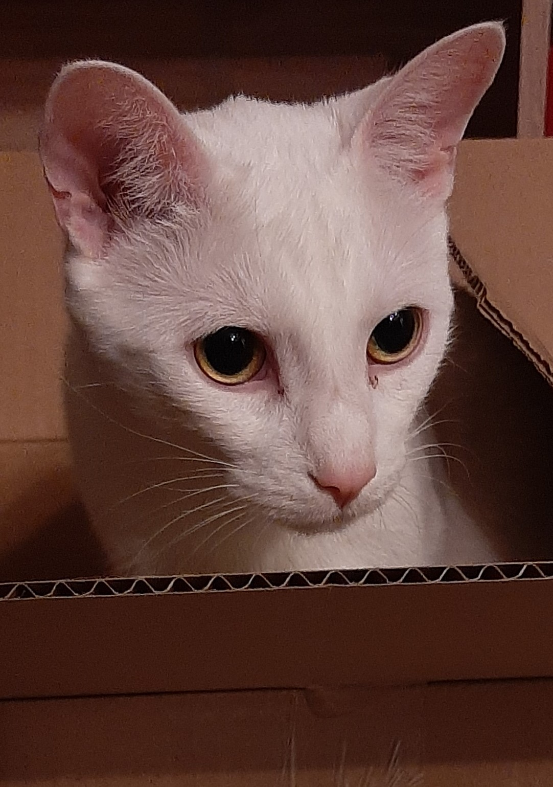

About Me:
I recently graduated from the University of Waterloo, with a master's in Electrical and Computer Engineering (April 2020) and bachelor's in Nanotechnology Engineering (2018). My day to day work during master's mainly consisted of writing Matlab code to simulate the quantum physics in semiconductor nanostructures. I am now running my own Etsy shop while job hunting. Feel free to message me!
